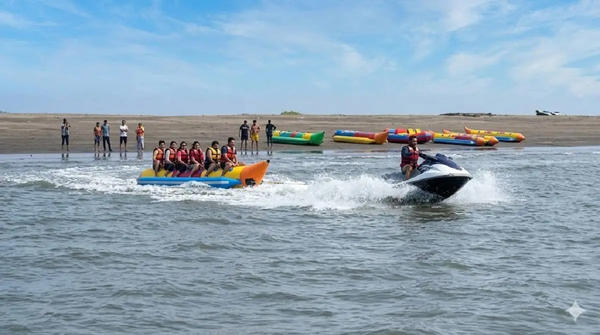

Jet Ski
Jet skiing is one of the most popular water sports in Alibaug. Visitors ride a high-speed jet-powered vehicle across the waves for an exciting coastal adventure.
Water sports are one of the most exciting activities available in Alibaug. Many visitors travel to the region specifically to experience adventure activities along the Konkan coastline.
Most water sports in Alibaug are located at Nagaon Beach, which is known for its wide shoreline and organized water sport operators.
Jet skiing is one of the most popular water sports in Alibaug. Visitors ride a high-speed jet-powered vehicle across the waves for an exciting coastal adventure.

Banana boat rides are group activities where participants sit on an inflatable boat pulled by a speedboat. These rides are especially popular with families and friend groups.

Speed boat rides allow visitors to explore the coastal waters around Alibaug at high speed while enjoying sea views and fresh ocean breeze.
Parasailing combines boating and flying as participants are lifted into the air by a parachute attached to a speedboat. This activity provides beautiful views of the coastline.

Kayaking is available at some beaches in the region and is ideal for visitors who prefer a slower and more relaxing water activity.
Apart from water sports, visitors can enjoy beach ATV rides, horse rides and other coastal adventure activities near major beaches.
Travelers planning water sports activities usually prefer staying near Nagaon Beach so they can easily access adventure operators and beach facilities.
Dolphin House Beach Resort is a convenient stay option for visitors planning activity-based trips around Nagaon Beach and nearby attractions.
Nagaon Beach is the main location for water sports activities including jet skiing and banana boat rides.
Most operators follow safety guidelines and provide life jackets and trained staff to supervise activities.